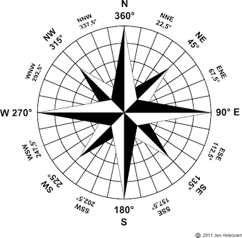

Wyszukiwarka krajów jest aplikacją wyszukującą dane geopolityczne na temat różnych państw. Dzięki niej możemy sprawdzić jaki obszar zajmuje dane państwo, jaka jest jego stolica, język, waluta oraz kraje graniczące, a także jaka jest jego nazwa w języku ojczystym. Po prawej stronie natomiast zamieściłam zdjęcia oraz ciekawostki z dziedziny kartografii. Co prawda niektóre urządzenia "trącą myszką", ale czy nie można spróbować cofnąć się w czasie, puścić wodze wyobraźni i jak dawni podróżnicy przemierzać przestrzenie ….
Aplikacja została wykonana m.in. z użyciem JS, Ajax i RESTful API. Dzięki API (interfejsowi programistycznemu aplikacji) udostępnionemu na stronie www https://restcountries.eu/ możemy korzystać z dużej bazy danych dotyczących różnych państw. Ze względu na fakt iż nie jest to polska baza danych proszę o wpisywanie nazw krajów w języku angielskim.
Jak prosto zmierzyć odległość na mapie? - najprostszy sposób to przyłożenie cienkiego sznurka do mierzonej trasy, aby po rozprostowaniu przyłożyć go do podziałki liniowej i odczytać odległość ze skali albo zmierzyć go linijką i przeliczyć odległość na metry.
Na zdjęciu zegar słoneczny Petera Dollonda (żyjący w XVIII wieku w Anglii wynalazca i konstruktor przyrządów optycznych) tzw. zegar słoneczny inklinacyjny. Przyrządy tego rodzaju używane były powszechnie przez podróżników i żeglarzy, były bowiem w stanie wskazać im czas niezależnie od miejsca, w którym się znajdowali.
{kind=link}
{kind=link}
{kind=link}